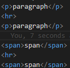

The hr element defines a thematic break in a html document.(A shift of topic)
The hr element is most oftenly displayed as a horizontal rule that is used to seperate content in a html page.
paragraph
paragraph
spanThis is how its coded:
You can easily change the width of this to make it display less of the breakline.
The global attributes are supported. Global
The event atttributes are suported. Event Attributes